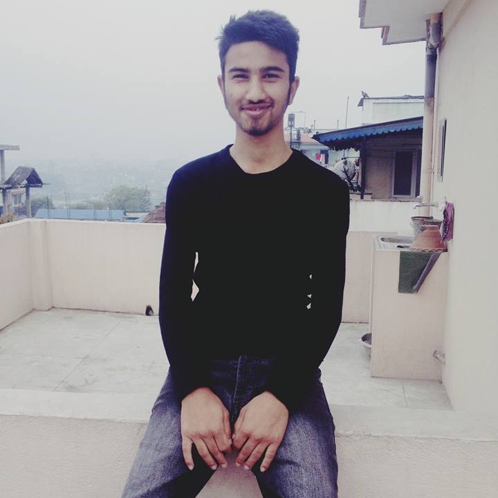

Well,my adulthood was not soo good because there were many changes in my emotion, body etc. I met many people and I changed many schools. Like I went to Bagmati Boarding Higher Secondary School when I was in grade 8 and Nobel academy when i was in grade 9. Also I gave SLC examination from Nobel Academy. I went to Global College of Management for my +2..
